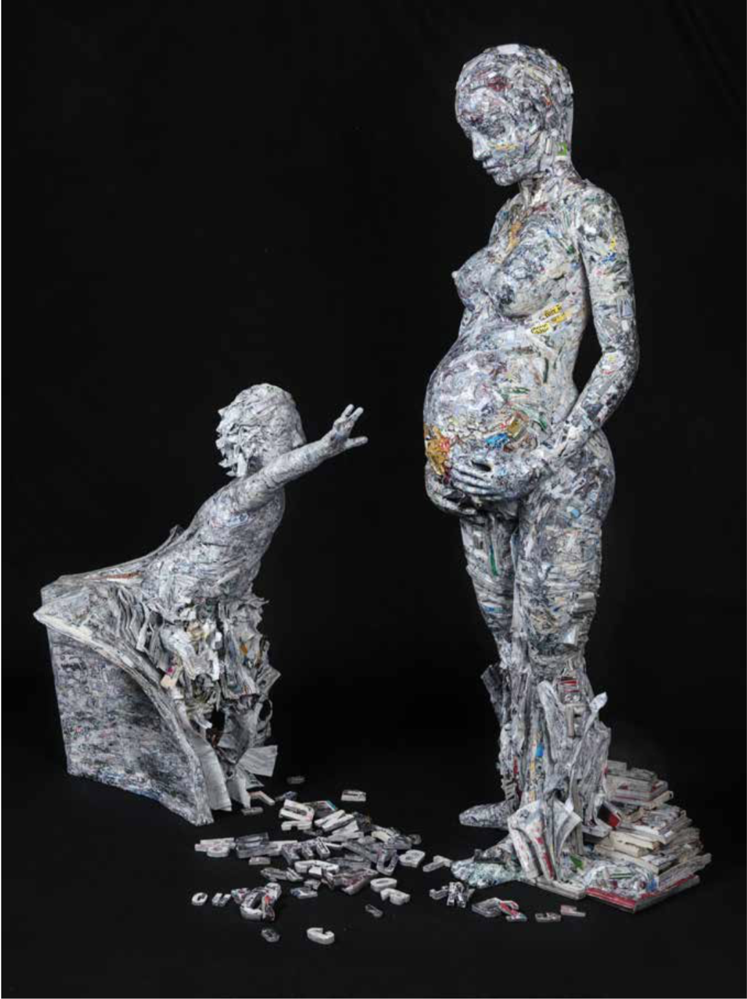
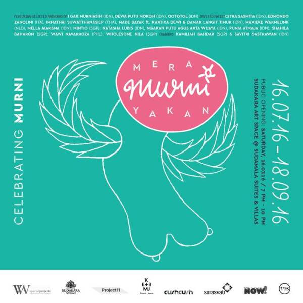
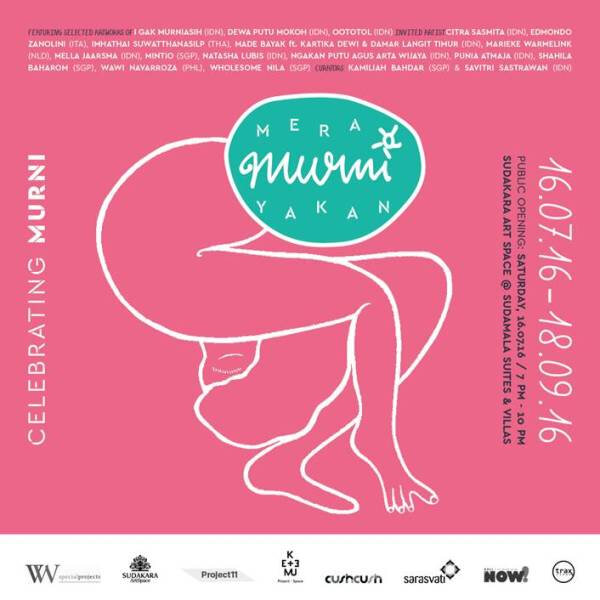
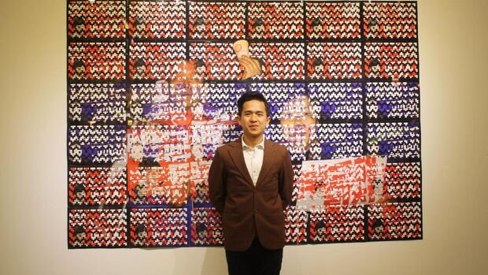
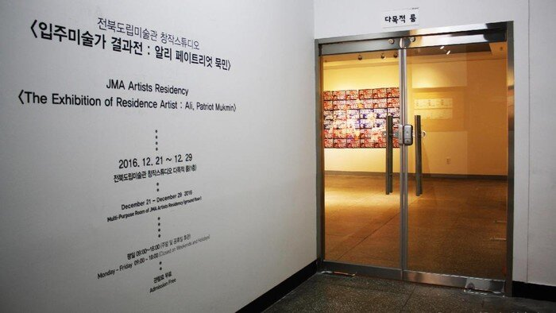
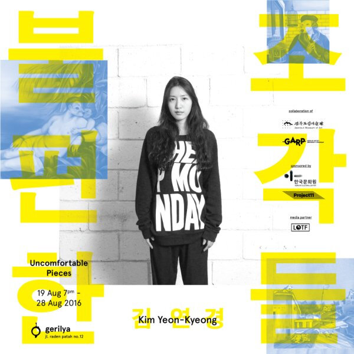
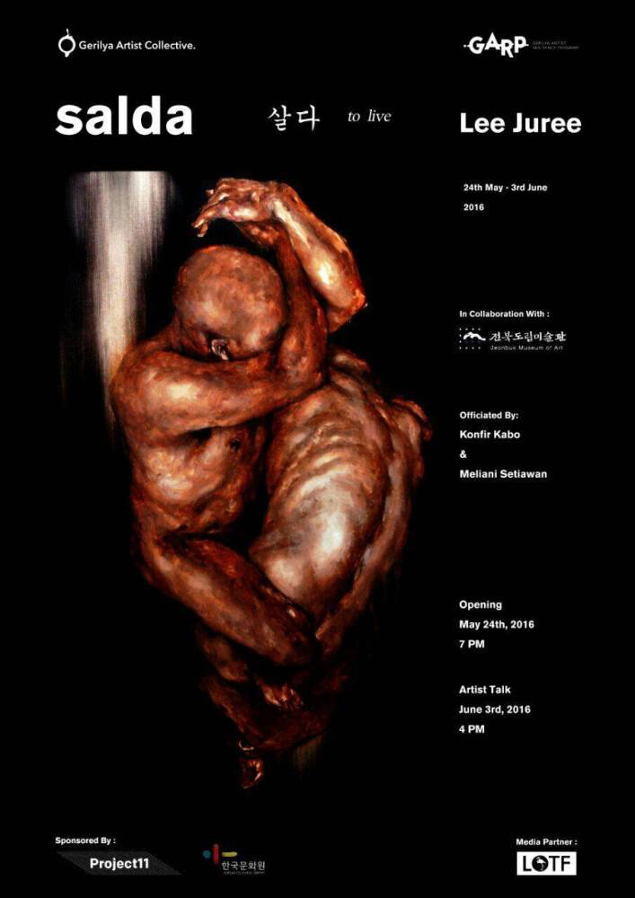

Featured work and image by Wayan Upadana.



Project 11 broke its rule of supporting living artists in 2016 due to the exceptional circumstances and work of I Gak Murniasah or more familiarly known as 'Murni' - arguably Bali's most important yet overlooked female artist. Murni lived from 1966-2006, born into a poor farming family and later working as a domestic helper. Her work was initially rejected by some of the best galleries in Ubud due to her lack of formal art education and the confronting, often sexual nature of her work.
A retrospective of her work was exhibited at Sudakara Art Space, in conjunction with Ketemu Project Space from 16 July - 18 September 2016. Project 11 supported the retrospective via the publication of the exhibition catalogues and booklets.
The following is an excerpt from an article written by Jean Couteau entitled 'Murni's Woman Call':
'To say that Murni's paintings are surprising is an understatement: some of the objects she presents in her work are for good reasons rarely named, and even more rarely shown: penis, vagina, lower lips, nipples and more. But when she does show them, they are not what you expect: penises will be ill-shaped, outsized, but ever present, sometimes "on the prowl", and often standing in places where they should not. Vaginas and lower lips may be "open" on the expectative, the object of a cult, turned into a peering eye, or suddenly pierced out of nowhere by an unwanted object. As for the breast and nipples, when recognizable and not eagerly sucked on, they are simply witnesses of the above and more... Yet, in te middle of these weird sexual fantasies also appear forms and messages that consist of simple lines, flat colors ad elementary structures that reveal Murni's original self and world, that of a simply woman faced with the throes of life, and who overcomes them, almost unwittingly through the artistic expression of an "outsider" - an "outsider" artist who was a shock to the Indonesian contemporary art world of her days.'



